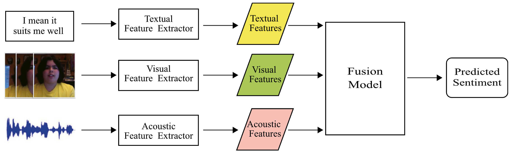

8.2 实验任务：多模态情感分析
注意
在实验开始时，请确保实验运行在GPU上！
在python环境下或在jupyter notebook里测试：
如果返回True，则GPU能被调用，否则请重启docker环境或联系助教对于实验过程中遇到的不熟悉的模型或者函数调用，可以参阅 PyTorch官网文档
任务背景介绍¶
多模态学习是机器学习中的一个重要领域，它涉及从多个模态（如文本、图像、音频等）中提取信息，以提高模型的性能和泛化能力。在现实世界中，信息通常以多种形式存在，例如在视频中，我们可以同时获取视觉、音频和文本信息。多模态学习的目标是有效地融合这些不同模态的信息，以便更准确地完成特定任务。
情感分析是自然语言处理和计算机视觉中的一个重要应用领域，旨在识别和提取文本、音频或视频中的情感信息。多模态情感分析（Multimodal Sentiment Analysis）结合了来自多个模态的信息，以提高情感识别的准确性。
数据集说明¶
本实验使用的数据集是CMU-MOSI（Multimodal Opinion-level Sentiment Intensity），这是一个广泛使用的多模态情感分析数据集。CMU-MOSI数据集包含视频片段，每个片段都附有文本、音频和视觉特征，以及对应的情感标签。情感标签的范围为[-3, 3]，表示从强烈的负面情感到强烈的正面情感。
数据集分为训练集、验证集和测试集。 数据集内的每个样本为一段第一人称的讲述视频。
多模态情感分析模型需要综合视频画面，ASR转录文本和音频综合分析判断视频情感。
考虑到显存和时间开销，我们在本次实验中采用了早期多模态情感识别算法的一般流程： 先通过预训练模型提取多模态特征，然后基于提取的多模态特征训练和测试模型。
（对该任务感兴趣的同学可以考虑从原始的视频、文本和音频特征开始设计和训练模型，可以得到更好的效果，本次实验不做要求。）
每个样本包含以下特征：
- 视觉特征：从视频帧中提取的视觉信息。视觉特征是通过FACET和OpenFace提取的。FACET提取了七种基本情绪和两种高级情绪的指标，以及20个面部动作单元（FACs），OpenFace提取了头部位置、头部旋转和68个面部标志点的位置。每帧有35个特征。
- 文本特征：从视频中提取的文本信息。文本特征是通过GloVe词嵌入得到的，每个单词被表示为一个300维的向量。
- 音频特征：从视频中提取的音频信息。音频特征是通过COVAREP提取的，包括12个MFCCs、音高跟踪、声门源参数等。每帧有74个特征。
- 情感标签：表示情感强度的数值。情感标签通过对若干标注人员标注的[-3, 3]内的整数评分求平均得到，表示从强烈的负面情感到强烈的正面情感。
由于特征已经提前进行了跨模态的对齐操作，因此每个模态的特征的长度均为50.
数据集下载遇到问题请联系助教。
具体实现过程¶
一个完整的深度学习项目通常包括以下步骤：数据集加载、模型构建、训练与测试流程，以及评价指标的设计与实现。
通常情况下，为了确保项目的可维护性和模块化，这些步骤会分布在不同的文件中。 但是为了便于作业提交和评分，我们将所有步骤整合在一个Jupyter Notebook文件中。
模型框架已在文档中基本完成，核心部分需要你自行补充完整，在需要补充的部分已经标注# TODO并附上相应的内容提示。
导入所需的模块¶
import pickle
import random
import numpy as np
import torch
import torch.nn as nn
import torch.nn.functional as F
from torch.utils.data import Dataset, DataLoader
import torch.optim as optim
from torch.optim.lr_scheduler import StepLR, CosineAnnealingLR
from sklearn.metrics import accuracy_score, f1_score
注意
如果导入sklearn报错未安装，通过以下指令安装:
数据集加载¶
class MOSIDataset(Dataset):
def __init__(self, data_path, split='train'):
# Load the data from the pickle file
with open(data_path, 'rb') as f:
data = pickle.load(f)
# Select the appropriate split
self.vision = data[split]['vision']
self.text = data[split]['text']
self.audio = data[split]['audio']
self.labels = data[split]['labels']
self.ids = data[split]['id']
# audio数据中存在坏点需要处理：
self.audio[self.audio == float('inf')] = 0.0
self.audio[self.audio == float('-inf')] = 0.0
def __len__(self):
# TODO: 返回数据集长度
def __getitem__(self, idx):
# Extract the features and label for the given index
vision = torch.tensor(self.vision[idx], dtype=torch.float32)
text = torch.tensor(self.text[idx], dtype=torch.float32)
audio = torch.tensor(self.audio[idx], dtype=torch.float32)
label = torch.tensor(self.labels[idx], dtype=torch.float32).squeeze()
return vision, text, audio, label
模型构建¶
一个简单的多模态情感分析模型的框架如下： 
基于上述框架，本次实验设计实现一个基于LSTM的多模态情感分析模型。
我们使用LSTM模型（实验四）作为单模态编码器和多模态融合编码器架构，最后我们通过线性层输出一个预测值。
由于得分是[-3, 3]内的一个实数，因此我们使用sigmoid函数映射到[0, 1]并放缩到对应大小。
class MultimodalSentimentAnalysisModel(nn.Module):
def __init__(self):
super(MultimodalSentimentAnalysisModel, self).__init__()
self.vision_norm = nn.LayerNorm(35)
self.text_norm = nn.LayerNorm(300)
self.audio_norm = nn.LayerNorm(74)
self.vision_fc = nn.Linear(35, 128)
self.text_fc = nn.Linear(300, 128)
self.audio_fc = nn.Linear(74, 128)
# 定义vision_lstm, text_lstm 和 audio_lstm和融合层mm_lstm. 要求hidden_size=128, num_layers=1, dropout=0.1, batch_first=True
# TODO: self.vision_lstm
# TODO: self.text_lstm
# TODO: self.audio_lstm
# TODO: self.mm_lstm
# Define a fully connected layer for fusion
self.fc = nn.Linear(128, 1)
def forward(self, vision, text, audio):
# apply layernorm
# TODO
# TODO
# TODO
# Process each modality
vision = F.relu(self.vision_fc(vision))
text = F.relu(self.text_fc(text))
audio = F.relu(self.audio_fc(audio))
# LSTM for temporal processing
output_v, (vision_h, _) = self.vision_lstm(vision)
output_t, (text_h, _) = self.text_lstm(text)
output_a, (audio_h, _) = self.audio_lstm(audio)
# 对单模态的LSTM输出进行直接相加得到feature
# TODO: feature
_, (fusion_tensor, _) = self.mm_lstm(feature)
# Concatenate the final hidden states
output = self.fc(fusion_tensor[-1])
# Apply sigmoid to constrain output to (0, 1)
# TODO
# Scale and shift to range (-3, 3)
# TODO
return output
评价指标¶
在本次实验中，我们使用了多种评价指标来评估多模态情感分析模型的性能。这些指标包括二分类、五分类、七分类情感分析，以及情感回归的均方误差（MAE）和相关系数（Correlation r）。
注意，由于模型的预测值是连续的实数，为了使用多分类任务的评价方式，需要将这些预测值转换为离散的类别，我们首先使用np.clip函数将预测值限制在特定范围内。
-
对于七分类情感分析，预测值被限制在[-3, 3]范围内。
-
对于五分类情感分析，预测值被限制在[-2, 2]范围内。
以下是每个指标的简单介绍和计算过程：
二分类情感分析¶
- 指标：准确率（Accuracy）和F1分数（F1 Score）
-
计算过程：
- 二分类情感分析将情感标签分为正面和负面两类。我们排除情感标签为零的样本，只考虑非零样本。
- 准确率计算公式：
\[ \text{Accuracy} = \frac{\text{Number of Correct Predictions}}{\text{Total Number of Predictions}} \]- F1分数计算公式：
\[ \text{F1 Score} = 2 \times \frac{\text{Precision} \times \text{Recall}}{\text{Precision} + \text{Recall}} \]- 在代码中，
non_zeros_acc2和non_zeros_f1_score分别表示非零样本的准确率和F1分数。
五分类情感分析¶
- 指标：准确率（Accuracy）
- 计算过程：
- 五分类情感分析将情感标签分为五个等级，范围为[-2, 2]。
- 准确率计算公式同上。
- 在代码中，
mult_a5表示五分类的准确率。
七分类情感分析¶
- 指标：准确率（Accuracy）
- 计算过程：
- 七分类情感分析将情感标签分为七个等级，范围为[-3, 3]。
- 准确率计算公式同上。
- 在代码中，
mult_a7表示七分类的准确率。
情感回归¶
- 指标：均方误差（Mean Absolute Error, MAE）和相关系数（Correlation r）
-
计算过程：
- 均方误差计算公式（\(y_i\) 是真实值，\(\hat{y}_i\) 是预测值）：
\[ \text{MAE} = \frac{1}{n} \sum_{i=1}^{n} |y_i - \hat{y}_i| \]- 相关系数计算公式（\(\bar{y}\) 和 \(\bar{\hat{y}}\) 分别是真实值和预测值的均值）：
\[ r = \frac{\sum (y_i - \bar{y})(\hat{y}_i - \bar{\hat{y}})}{\sqrt{\sum (y_i - \bar{y})^2 \sum (\hat{y}_i - \bar{\hat{y}})^2}} \]- 在代码中，
mae和corr分别表示均方误差和相关系数。
这些指标提供了不同的视角来评估模型的性能，包括分类准确性和回归精度。通过综合使用这些指标，我们可以更全面地理解模型在多模态情感分析任务中的表现。
def eval_mosi_regression(y_pred, y_true, exclude_zero=False):
test_preds = y_pred.view(-1).cpu().detach().numpy()
test_truth = y_true.view(-1).cpu().detach().numpy()
test_preds_a7 = np.clip(test_preds, a_min=-3., a_max=3.)
test_truth_a7 = np.clip(test_truth, a_min=-3., a_max=3.)
test_preds_a5 = np.clip(test_preds, a_min=-2., a_max=2.)
test_truth_a5 = np.clip(test_truth, a_min=-2., a_max=2.)
mae = np.mean(np.absolute(test_preds - test_truth))
corr = np.corrcoef(test_preds, test_truth)[0][1]
mult_a7 = multiclass_acc(test_preds_a7, test_truth_a7)
mult_a5 = multiclass_acc(test_preds_a5, test_truth_a5)
non_zeros = np.array([i for i, e in enumerate(test_truth) if e != 0])
non_zeros_binary_truth = (test_truth[non_zeros] > 0)
non_zeros_binary_preds = (test_preds[non_zeros] > 0)
non_zeros_acc2 = accuracy_score(non_zeros_binary_preds, non_zeros_binary_truth)
non_zeros_f1_score = f1_score(non_zeros_binary_preds, non_zeros_binary_truth, average='weighted')
eval_results = {
"Non0_acc_2": round(non_zeros_acc2, 4),
"Non0_F1_score": round(non_zeros_f1_score, 4),
"Mult_acc_5": round(mult_a5, 4),
"Mult_acc_7": round(mult_a7, 4),
"MAE": round(mae, 4),
"Corr": round(corr, 4)
}
return eval_results
def multiclass_acc(y_pred, y_true):
y_pred = np.round(y_pred)
y_true = np.round(y_true)
# Compute the accuracy
# TODO: 注意，这里统计的是总的分类准确率，而不是在每个类别上的准确率。
return acc
模型训练¶
在模型的训练过程中，我们每训练完成一个epoch，就在验证集上进行一次模型评估。我们选择结果最好的那个epoch的模型作为最优模型并保存。
注意，保持学术严谨性，不要使用测试集挑选超参或者最优模型。
def train_model(model, train_loader, valid_loader, criterion, optimizer, scheduler, device, epochs):
model.to(device)
best_corr = 0.
best_epoch = 0
for epoch in range(epochs):
model.train()
running_loss = 0.0
for i, (vision, text, audio, labels) in enumerate(train_loader):
vision, text, audio, labels = vision.to(device), text.to(device), audio.to(device), labels.to(device)
optimizer.zero_grad()
# 模型前向获得输出：
# TODO
# 计算损失：
# TODO
# 反向传播，计算梯度
# TODO
optimizer.step()
scheduler.step()
running_loss += loss.item()
print(f'Epoch [{epoch+1}/{epochs}], Loss: {running_loss/len(train_loader):.4f}')
val_corr = validate_model(model, valid_loader, criterion, device)
if val_corr > best_corr:
best_corr = val_corr
best_epoch = epoch
torch.save(model.state_dict(), 'best_model.pth')
print(f"Best model saved with val_corr {best_corr} at epoch {best_epoch}.")
模型验证¶
def validate_model(model, valid_loader, criterion, device):
model.eval()
valid_loss = 0.0
all_preds = []
all_labels = []
with torch.no_grad():
for vision, text, audio, labels in valid_loader:
vision, text, audio, labels = vision.to(device), text.to(device), audio.to(device), labels.to(device)
outputs = model(vision, text, audio)
loss = criterion(outputs.squeeze(), labels.squeeze())
valid_loss += loss.item()
all_preds.append(outputs)
all_labels.append(labels)
print(f'Validation Loss: {valid_loss/len(valid_loader):.4f}')
all_preds = torch.cat(all_preds, dim=0)
all_labels = torch.cat(all_labels, dim=0)
# 计算评价指标
# TODO
print(eval_results)
return eval_results["Corr"]
主函数¶
def main():
# 固定随机数种子，确保实验结果可重复性
seed = 42
random.seed(seed)
np.random.seed(seed)
torch.manual_seed(seed)
if torch.cuda.is_available():
torch.cuda.manual_seed(seed)
torch.cuda.manual_seed_all(seed)
device = torch.device('cuda:0' if torch.cuda.is_available() else 'cpu')
print(device)
# 定义损失函数criterion, 使用均方误差损失。可以使用pytorch封装好的函数，也可以根据公式手写：
# TODO
learning_rate = 1e-3
epochs = 20
# Initialize the model.
# TODO
data_path = './mosi_raw.pkl'
# 初始化训练集和验证集的数据集类
# TODO: train_dataset
# TODO: valid_dataset
# 初始化训练集和验证集的加载器，要求batch_size=16
# TODO: train_loader，参数shuffle=True
# TODO: valid_loader，参数shuffle=False
# Initialize the optimizer and scheduler.
# TODO: 使用Adam优化器
scheduler = CosineAnnealingLR(optimizer, T_max=epochs*len(train_loader))
# 调用训练函数，注意传入对应参数：
# TODO
# 加载最佳epoch参数
best_model_state = torch.load('best_model.pth')
model.load_state_dict(best_model_state)
# 初始化测试集的数据集类和加载器
# TODO: test_dataset
# TODO: test_loader
print("\n========== test results: ==========\n")
validate_model(model, test_loader, criterion, device)
程序执行¶
注意
-
如果模型和评价指标代码全部补充正确，最终结果应接近：{'Non0_acc_2': 0.7241, 'Non0_F1_score': 0.7252, 'Mult_acc_5': 0.3469, 'Mult_acc_7': 0.3047, 'MAE': 1.0878, 'Corr': 0.547}
-
请不要将测试集合用于超参选择或者最佳训练epoch的挑选，因为测试集的主要目的是用于评估模型在未见数据上的泛化能力。如果在模型训练过程中使用测试集来进行超参数选择或选择最佳训练epoch，就会导致信息泄漏，使得模型在测试集上的性能评估不再客观和准确。这种做法可能导致模型过拟合于测试集，从而无法真实反映模型在实际应用中的表现。因此，通常应该将数据集分为训练集、验证集和测试集，使用验证集进行超参数调优和模型选择，而将测试集保留用于最终评估。
思考题
-
在上述代码的基础上，使用tensorboard记录训练过程在训练集和验证集上的损失变化曲线，分析损失变化趋势不同的原因。使用tensorboard输出模型结构图。
-
消融实验分析：
2.1 在原模型的基础上，使用Transformer encoder替换上述模型中的LSTM，记录并分析实验结果。可以使用pytorch封装好的模型，也可以自己手写Transformer。由于处理的对象是时序数据，因此不要忘记使用位置编码（position encoding）。
2.2 模型中使用Layernorm的目的是什么？对比原模型和移除Layernorm层以后的实验结果差异。
2.3 在原模型的基础上移除对应模块，对比只使用text输入，只使用vision输入，只使用audio输入，和使用text+vision输入，使用text+audio输入和使用全部模态输入的实验结果差别，并分析实验结果。
2.4 在原模型的基础上，将损失函数从均方误差损失（Mean Square Error）替换成绝对误差损失（Mean Absolute Error， MAE）和平滑L1损失（Huber Loss），对比实验结果差异。
2.5 在原模型的基础上，将特征融合方式从[简单相加+LSTM]替换成基于注意力机制（参考实验五）的融合方式。例如，你可以通过对于不同模态的特征相加或拼接和进行self-attention, 或者在不同模态之间进行cross-attention。在实验报告中描述你的方案并记录实验结果。
-
结合上述分析，设计一个相比于原模型表现更好的多模态情感分析模型。你可以通过替换单模态编码模型、损失函数、多模态融合方式，或者综合几种方法来获得更好的性能表现。在报告中结合图示或者公式详细描述你的模型设计，指出你的模型相比原模型的改进之处，并和原模型进行实验结果对比。请将模型代码包含在EXP_MSA.ipynb文件或者提交新的ipynb文件。
什么是消融实验？
消融实验（Ablation Study）是一种在机器学习和深度学习领域中常用的方法，用于评估模型中各个组件或特征对整体性能的影响。通过系统地移除或修改模型的某些部分，研究人员可以了解这些部分在模型中的重要性和贡献。
在消融实验中，通常会进行以下步骤：
-
选择组件：确定模型中需要评估的组件或特征。这可能是某个特定的层、模块、特征集或超参数。
-
移除或修改：有计划地移除或修改这些组件。可以是完全删除某个模块，或者是改变某个参数的值。
-
评估性能：在修改后的模型上进行实验，评估其性能变化。通常使用与原始模型相同的评估指标。
-
分析结果：通过比较原始模型和修改后模型的性能，分析每个组件对模型整体性能的影响。
消融实验的结果可以帮助研究人员：
- 确定哪些组件对模型性能至关重要。
- 识别可能的模型改进方向。
- 理解模型的内部工作机制。
- 简化模型，去除不必要的复杂性。
这种方法在论文和研究中非常常见，因为它提供了一种系统化的方法来理解复杂模型的行为。
参考文献¶
Zadeh et al., Tensor Fusion Network for Multimodal Sentiment Analysis